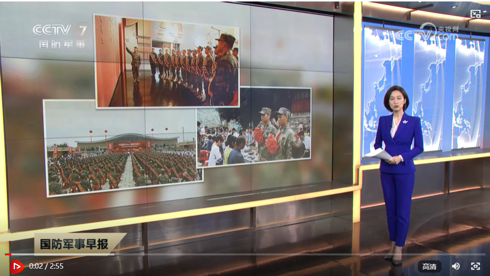
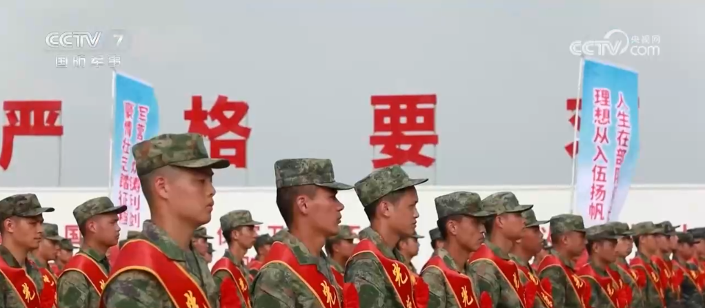

各地组织形式多样的欢送仪式 助力预定新兵走好军旅“第一步”
来源：央视网 | 2024年09月16日 11:42:51

央视网消息：全军下半年新兵运输工作陆续启动，连日来，各地纷纷开展欢送新兵、役前教育等活动，进一步增强入伍新兵的自豪感、荣誉感和使命感，帮助他们迈好军旅生涯第一步。
携笔从戎砺青春，热血报国赴军营。在湖南长沙、怀化等地，军地联合组织新兵欢送大会，新兵身披绶带、胸佩红花，怀揣献身国防梦想，奔赴心之所向的军营。

在湖南湘西十八洞村，村民们擂响苗鼓、唱起苗歌，用舞龙舞狮、吃百家宴等苗族当地特有的方式，为11年来村里首次参军入伍的2名大学生新兵举行了一场特殊的送兵仪式，为他们送上家乡的期望与嘱托。
在辽宁省铁岭市，200多名预定新兵在雷锋纪念广场上整齐列队，接过象征荣誉和使命的“新时代雷锋传人”锦旗和雷锋纪念章，在家乡父老的见证下，迎接属于他们的光荣时刻。
在山东省东明县的新兵欢送大会上，100多名小学生为每一名预定新兵送上了精心准备的礼物，分别是一小瓶来自故乡的沃土和一份学生们亲笔写下的祝福，希望他们不忘家乡的哺育之恩，在部队安心服役、刻苦训练。
许多地方还为预定新兵送上了一场场精彩的文艺演出。在山东青岛、河北张家口、安徽萧县、泗县等地，军地多部门联合，用丰富多彩的文艺节目，为即将开启军旅生涯的新兵们送行。
对于预定新兵来说，走好军旅“第一步”有着非常重要的意义。在吉林长春、江西泰和等地，当地兵役部门组织预定新兵开展全封闭军事化管理的役前教育，帮助他们早日完成从地方青年到合格军人的转变。
编辑：刘洁 责任编辑：刘亮